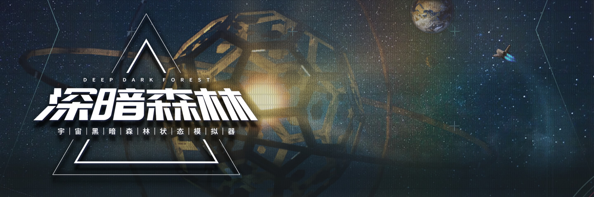

内容概述: 这个页面对游戏起始界面的各种模式和功能都做了介绍, 不过重点还是放在了剧情模式上, 你可以在此了解到相关场景的任务列表, 以及一些通关要点, 此外还会涉及到游戏的一些机制与细节, 虽说限于篇幅, 无法面面俱到, 但还是能帮你解答一些数据与算法的问题, 你当然也可以选择自行探索, 这样也能避免被剧透(假如你确实关心 RTS 游戏剧情的话), 亦或是通关后再来查阅内容, 相互验证;
重要提示: 深暗森林尽管是款有别于传统 RTS 游戏的新作, 但它的设定也是颇为硬核, 与其他即时战略游戏一样, 上手是有一定门槛的, 因此,
小心操作: 在通过某些挑战后, 可能得到"字节数据"或"中枢数据"作为奖励, 在你没有搞懂这些是什么之前, 千万别随意使用它们, 因为这些数据可用于创建文明, 而剧情模式后面的两个大关, 需要拥有特殊主义的文明才能继续游玩, 如果你将这些资源挥霍一空, 之后无法创建对应的文明, 则关卡就无法被启动, 尽管这些数据也能在战场模式中获取, 但你也不希望体验剧情时被卡住吧, 所以还请务必慎重!;
起航(教程一): 这是剧情模式下的第一个章节, 而该章节又被细分成了四个场景, 游戏非常好的将故事背景和新手引导结合到了一起, 在这些场景中, 我们将扮演一个文明的领袖, 在执政官顾问的引导下学习[探索/扩张/内政/军事], 你也不是非得按照顺序去游玩这些场景, 但是考虑到剧情的连贯性和上手的难度, 还是推荐按部就班的过一回它们;
————
1场景名称: 第一次接触;
关卡地图: 太阳系;
文明数量: 2;
剧情概述:
随着科技的发展, 我们的文明终于升格成了星际文明, 再之后, 我们发现了其他文明的踪迹, 于是向他们发出了友好的问候, 但随着他们的舰队出现在了我们的母星系周围, 压倒性的军事力量将我们所引以为傲的文明摧毁殆尽, 这时我们才明白, 漫天繁星, 为何选择沉默…
关键任务:
01. 发现一个太空文明并与其建立贸易关系(奖励: 中枢数据
Tip: 该任务只要跟随教程指引即可完成, 贸易协议能让双方都 +10 凝聚力(可同时跟多个高等文明签订协议, 但最多只能 +30 凝聚力);
场景提示:
01. 某些按钮和机制, 会随教程推进才出现, 如果看不懂下面的某些内容也不用急, 继续做任务就是了;
02. 点击界面顶部的"任务"按钮, 即可查看当前关卡的需求, 全部完成就能通关, 但需求也是随剧情和流程逐步出现的;
03. 在剧情模式和对战模式(PVE)里, 按 X/ESC 均可暂停时间, 也可在界面右上角按减速或加速(快捷键 Z/C);
04. 游戏默认速度, 是现实的 1 秒对应游戏的 1 年, 另外 4 档速度是现实 1 秒分别对应游戏的 [0.25/0.5/2/3] 年;
05. 剧情模式的地图是固定的(战场模式的地图则是随机生成), 星系的位置和属性不会变化, 只是部分地图会随机旋转;
06. 在大地图(星域界面)可通过扫描揭开战争迷雾, 地图边缘有圈红线, 那是主星团的边缘, 星系只会在红圈内生成(外部就不用理了~);
07. 资源是所有行动的基础, 每个"工厂"建筑每年默认
08. 凝聚力会影响资源的最终收益, 它的范围值被限定在
09. 与原始文明所在星系进行交流, 可以得到科技点, 如果选择获得科技增长则收益可翻倍, 但是需要耗费较长的时间;
10. 原始文明所在星系无法被殖民, 但可通过整合变成我方殖民地, 资源需求
11. 在完成了所有的任务之后, 游戏会弹出结算页面, 可看到关于生存时间和运营数据等内容, 此时就可以退出场景了;
12. 在结算后, 也可继续在这个场景, 尝试其他操作或查看信息(例如[科技/建筑]细节), 不过这些场景的内容无法被带到下个场景里去;
————
2场景名称: 背水的一战;
关卡地图: 太阳系;
文明数量: 2;
剧情概述:
我们遭遇了前所未有的失败, 敌人的力量远胜我方, 但他们所展露的一切, 也让我们的科技在短期内得到了极大的进步, 再之后我们通过伪装成原始文明的手段, 争取到了宝贵的发展时间, 最终, 我们成功发起了反攻, 但却发现对方跟我们相似, 也遭到过高等文明的打击…
关键任务:
01. 收复已沦陷的大阳系(奖励: 中枢数据
Tip: 任意军事行动都需要有"军事基地", 对方的军事科技比我们高, 需要升级过军事科技才可战胜, 作战成功就算完成任务, 无需殖民;
02. 消灭谜之军政府位于唧筒座的殖民星系(奖励: 中枢数据
Tip: 舰队可能需要数百年才能抵达, 而在此期间, 敌人的军事科技可能会远超我方, 可点击舰队, 在界面右上角, 点击"跃迁"缩短航程;
场景提示:
01. 这个关卡和下个关卡的地图, 跟上个关卡是基本相同的, 但星系[资源/建筑/战争迷雾]都被重置了;
02. 必须完成所有关键任务才能获得奖励, 中途退出是不算的, 因为游戏没有场景存档的功能, 尽量尝试一次性通关吧;
03. 当星系被毁, 可能迎来一波技术爆炸(可一次性获得大量的科技点, 具体数值和被毁星系的建筑数量以及价值相关);
04. 除了探索星系或文明交流, 其实[爆发内战/文明覆灭]等事件也可能迎来技术爆炸, 危机里潜藏着机遇, 即便是绝境, 也请不要放弃;
05. 不同星球的槽位开发成本也不同, 一般潜在槽位数越多的星球, 开发成本就越低, 也应该优先开发;
06. 星球默认都只有一个建筑槽位, 但大多数星球([小行星/中子星/脉冲星/黑洞/残骸]除外), 都可用资源开发出更多;
07. 当高等文明的星系面对外来文明的交流时, 均可选择[响应(可建立外交)/伪装(成原始文明)/沉默(不做任何回应)];
08. 伪装会触发原始交流事件(对方加
09. 舰队登陆这种攻击方式, 最终会根据双方舰队的[规模/装甲/闪避]判断胜负, 所以带有一定随机性;
10. 发现敌军来袭可通过"移民管理"的"征兵"操作来让舰队规模翻倍, 但它的 CD 空档长达
11. 舰船的属性会被固定在出航的那刻, 也就是说, 后续即便是已经升级了相关科技, 无法影响到那些已在路上的飞船;
12. 舰船每次跃迁可让航程减半(
————
3场景名称: 生存的压力;
关卡地图: 太阳系;
文明数量: 2;
剧情概述:
在经历过迷之军政府的入侵事件后, 我们暂时放缓了殖民扩张的步伐, 然而, 管理太空文明的难度超乎想象, 不断消耗的资源, 难以维持的凝聚力与日益膨胀的压力, 正不断从内部侵蚀着我们, 敌人的残兵甚至还向我们再次发动了攻击, 在内忧外患之下, 我们爆发了内战…
关键任务:
01. 开发 1 次星球(奖励: 中枢数据
Tip: 开发行星可以一次性降低大量压力, 但行星可开发的次数是有限的, 且开发所需要的资源和时间, 还会随着开发次数的增多而上涨;
02. 存活超过 1000 年(奖励: 中枢数据
Tip: 即使另外两个任务都完成了, 也还是得等时间到 1000 年才会触发结算, 要时刻注意压力, 别让数值爆炸, 会导致文明陷入内战的;
03. 拥有殖民地数量 >=5(奖励: 中枢数据
Tip: 敌方舰队向我们发动了攻击后, 归属的文明就会彻底消失, 星系中其实也就没有其他敌人了, 在解决好压力问题后, 就随便殖民吧;
场景提示:
01. 要时刻关注压力值, 当压力值
02. 若资源不够就只能选"分割文明", 会
03. 因内战被分割的殖民地, 会变成类似原始文明所在的星系那样, 可进行交流并整合, 但对方面对交流可能保持沉默;
04. 如果对方拒绝交流, 那就只能进攻后再殖民了(必定胜利但可能破坏建筑), 尽管内战也许会带来科技增长, 但要尽量避免这种内耗!;
05. 降低压力的常用方法除了开发星球, 还有建造居住区和解锁降压科技, 也可利用新解锁的议院系统(完成任务即可);
06. 议院奖励有[获得资源/降低压力增长]等等, 但上议院任务别乱接, 因为完成不了会有惩罚(之前的任务面板被移到下议院的界面里);
07. 压力增长的来源包括, 每六十年
08. 当原始文明所在星系遭受舰队攻击而沦陷, 发起攻击的文明将触发避难者事件, 会固定
09. 高等文明占有的星系遭受舰队攻击而沦陷, 所有玩家得到的压力为
10. 既高等文明的星系沦陷, 触发避难事件带来的压力会均分给场上所有生还的玩家, 若星系里的星球根本没开发过, 则不会触发事件!;
11. 在该场景中, 我们可以使用所有的通用科技类型了(
12. 科技项需求的科技点各不相同, 科技类型需求的科技点为
————
4场景名称: 战争的艺术;
关卡地图: 水瓶座;
文明数量: 2;
剧情概述:
在经历过重重挑战之后, 一个叫做宁静爆破者的武装组织又一次威胁到了我们的生存, 他们实力强大且行迹莫测, 为了防御, 我们动用了各种方法, 但依然难以正面与之抗衡, 最终, 我们研发出了质量弹, 这是一种可将星系完全摧毁的武器, 双方对抗的烈度还在不断上升…
关键任务:
01. 消灭宁静爆破者文明(奖励: 中枢数据
Tip: 与之前的敌人相比, 该文明颇为强大, 不单科技远超我方, 且拥有多个殖民地, 最好是用质量弹打爆对方所有星系, 而非比拼舰队;
场景提示:
01. 在过去, 这个场景里有三个文明, 除了你自己, 还有宁静爆破者和宇宙掠夺者, 但后来它们被统合成了宁静爆破者;
02. 敌人会主动攻击我们, 虽然正式建交后, 也能发起贸易请求或科技合作, 但最终目标是消灭对方, 没有和解的可能;
03. 可以建人造星系了, 当前游戏共有[小型空间城/人造星系/大型人造星系]三种人造星系(该场景只开放了其中一种);
04. 人造星系跟自然星系不同, 它们一旦遭到登陆攻击并且沦陷, 就会彻底消失, 而不是变成无主星系, 既无法被攻占;
05. 人造星系的区别在于[需求资源/需求时间/槽位数量/引力半径]不同, 人造星系数量不能多于殖民星系, 也不能建在星系引力范围内;
06. 人造星系可以作为探索或者进攻的跳板, 许多"高级建筑"也只能建在人造星系上, 例如[传感阵列/低光速屏障], 所以也种防御手段;
07. 可以使用质量弹了(在进阶军事解锁), 比起派遣舰队, 价格较低(为舰队的
08. 质量弹会忽略敌人的舰队实力, 只要没被拦截, 则攻击必定成功, 因而是军事实力差距较大时一种以弱胜强的手段;
09. 质量弹会将常规的星系打成黑洞, 而黑洞会被完全打爆, 无论什么情况, 星系上的建筑都会被毁灭;
10. 可以通过"高速质量弹"的科技项, 让下次发出的质量弹速度
11. 能量防护罩(也被称之为"低光速屏障"或"能量护盾"), 可拦截除[登陆攻击/广播]以外任意形式的攻击(不分敌我, 碰到边缘就消失);
12. 在能量防护罩范围内进行跃迁的事物也会被毁灭(不分敌我), 但它的有效年限仅为
远航(教程二): 这是剧情模式下的第二个章节, 而该章节又被细分成了两个场景, 我们继续扮演地球这个文明的领袖, 去面对更加严峻的挑战, 例如逃离天灾和建造方舟, 这些场景会开放更多机制与功能, 实际上和 PVE 或 PVP 已经较为近似, 由于更多的聚焦于生存与战争, 所以压力和紧迫感也随之递增, 总之, 更加深入体验黑暗森林的法则吧;
————
1场景名称: 闪烁的星空;
关卡地图: 阿尔法星区;
文明数量: 6;
剧情概述:
随着可开采资源的极速减少, 我们文明所在的母星系陷入了一场相当严重的能源危机, 好在我们还是发现了一片资源丰富的区域, 并通过建造戴森球缓解了需求问题, 但戴森球所发出的巨大噪音也让部分人担忧, 因为也这使得我们更容易暴露, 果然, 我们的处境越发险峻…
关键任务:
01. 建造出一座戴森球(奖励: 中枢数据
Tip: 解锁"进阶发展"科技类型, 再解锁"恒星资源利用"科技项, 就能在恒星槽位建造戴森球, 戴森球无需消耗星系资源就能有资源收入;
02. 存活超过 1500 年(奖励: 中枢数据
Tip: 敌人几乎不会主动攻击你, 但你并不安全, 因为二维空间会不断膨胀并吞噬一切, 最好在主星团边缘建一个人造星系, 来尽量拖延;
可选任务:
01. 介入战争(奖励: 中枢数据
Tip: 攻击指定星系并成功即可完成该任务, 派遣舰队或者使用质量弹都行(可选任务并不影响通关, 但完成能解锁成就并得到中枢数据);
02. 消灭银河帝国(奖励: 中枢数据
Tip: 到中后期, 银河帝国的殖民地会被二维空间吞噬, 也可能会被其他势力攻占, 无论是哪种情况, 任务都算是完成, 无需你自己动手;
03. 使用一次广播攻击(奖励: 中枢数据
Tip: 星系需要同时拥有军事基地和广播站, 才能发起广播攻击, 这会同时暴露发出攻击和遭受攻击的星系, 根据噪音值高低而受到打击;
场景提示:
01. 戴森球和环世界都是巨构建筑, 其特点是只能建在恒星槽位上(残骸和黑洞的槽位也算是恒星槽位);
02. 虽然巨构建筑的收益很高, 但产生的噪音高达六十, 在对战中容易引来广播攻击, 如果没有降噪的手段就很致命了;
03. 在剧情模式的关卡中, 由于敌人都经过了特殊设置(特意降低难度), 所以他们几乎是不会主动向你发起广播攻击的;
04. 只要不发起广播而暴露自己就没问题, 所以戴森球和环世界随便造吧, 不用理会噪音, 降噪科技和建筑也都不需要;
05. 在游戏中, 文明实际上被分成了[原始文明/高等文明/神级文明]三种, 其中的神级文明被设定为科技远超高等文明;
06. 神级文明彻底隐藏了自身, 且不屑与我们交流, 我们也无法发现他们, 当星系噪音过高且遭受广播时, 神级文明就会对其发动攻击!;
07. 神级文明的攻击无法被防御, 当星系遭受到广播攻击时,
08.
09. 二维空间的概念来自于著名科幻小说《三体》, 也是降维打击这个词的由来, 在游戏中表现为会吞噬范围里的一切;
10. 被吞噬的星系和舰船会完全摧毁, 你也无法让舰船通过跃迁来穿过二维空间, 但[扫描船/探索船/交流船]不受影响;
11. 该场景还会解锁"军事命令"的功能(在大地图点击右键便可执行), 包含舰队巡逻和尘埃区域的操作;
12. 军事命令的操作都可持续性获取范围里通过的事物信息, 包括[舰船/武器], 但巡逻只会报告给发起方, 尘埃则所有人都会接到报告;
————
2场景名称: 远航的方舟;
关卡地图: 天鹅座星系;
文明数量: 6;
剧情概述:
数百年前, 我们的家园附近出现了不断扩大的低维空间, 它吞噬着一切, 先辈们只得开始了漫长的逃亡, 最终在此安身, 而当我们的文明休养生息之时, 低维区域的扩张却从未停止, 如今它再次逼近了我们现在的栖身之地, 我们的安稳时日所剩无多了, 需要尽快寻觅生路…
关键任务:
01. 建造方舟并带领文明逃亡(奖励: 中枢数据
Tip: 在人造星系建造好了观测站, 得知二维空间到来的时间后, 科学家顾问就会提议修建方舟逃离此处, 为此你需要先造一个方舟船坞;
02. 远航距离达到 1000 光年(奖励: 中枢数据
Tip: 升级过方舟的龙骨, 就需要选择要航行距离了, 共有[1000/3000/5000]三个选项, 选择最远距离, 可同时完成前面两个距离的任务;
可选任务:
01. 远航距离达到 3000 光年(奖励: 中枢数据
Tip: 你需要先升级方舟的"龙骨", 提供更多模块修建"区域", 再升级[燃料提取/动力炉/武器/居住]模块, 确保方舟足以支撑迁徙距离!;
02. 远航距离达到 5000 光年(奖励: 中枢数据
Tip: 如果选了最远距离, 就不能带上所有人, 因为燃料和动力是有限的, 人口过多会导致航行距离不够, 方舟无法起航, 挑战也会失败;
场景提示:
01. 该场景存在一个叫"星际海盗"的文明, 他们每隔一段时间会向我们索要 5000 资源, 给了他们就不会主动攻击我方;
02. 由于我们的首要任务是建造方舟逃离, 所以建议直接给资源, 这样就无需投资军事科技和军事建筑, 会更省事一点;
03. 尽管这是即时战略的对抗游戏, 但获胜方法并非只有消灭对手, 在 PVE 或 PVP 对战中, 当游戏年份超过 1000, 也会解锁方舟机制;
04. 方舟可航行的距离, 也是判断胜负的因素, 因此这个场景的内容, 其实也是在预演战场模式的实况;
05. 一个文明只能建造一个方舟船坞, 方舟船坞跟人造星系一样, 受到攻击并沦陷, 就会毁灭, 也就是说它无法被占据;
06. 当方舟船坞被毁, 可重新再建 1 个, 方舟上已经造好的设施也能保留, 但方舟船坞毁灭前那些升级到一半的项目进程就无法保留了;
07. 方舟模块被分成了基础和生产两类, 其中的基础模块跟航程相关, 而生产模块则是能带来[资源/科技/凝聚力]收益;
08. 生产模块非但对方舟的远航没帮助, 还会缩短航程且无法拆除, 如果是想挑战最远航程, 最好就别贪图这些收益了;
09. 修建方舟任意模块都需要占据一个区域, 区域靠升级龙骨获得, 每级龙骨提供
10. 但这个数量不足以将所有的模块都修到满级, 且每个模块都会导致方舟"启动所需动力"
11. 方舟的航程算法具体如下,
12.
科学官之章: 这是剧情模式下的第三个章节, 而该章节又被细分成了五个场景, 你将扮演一个物质主义文明的科学官, 在浩瀚的宇宙中尝试寻找关于逆转维度的技术, 这是一场关于探索求生的旅途, 场景还会出现一些有趣的特殊机制, 不过这个场景需要有物质主义的文明才能开始, 尝试创建一个物质或狂热物质主义的文明吧(可参考 # 文明系统);
————
1场景名称: 历史博物馆;
关卡地图: 麦哲伦星系;
文明数量: 2;
剧情概述:
整个宇宙都在逐渐低维化, 而该星域正处于毁灭前沿, 我们没有足够能力转移所有东西, 但这里是科学研究的重要地区, 所以我们尝试着建立一种特殊博物馆来保存知识和文物, 期待将来技术足够时能还原被二维化的事物, 与此同时, 我们发现这里还有许多难民等待救援…
关键任务:
01. 建造出八个博物馆(奖励: 中枢数据
Tip: 文明博物馆是剧情模式里的特殊建筑, 它仅作为任务需求存在, 每个星系只能建造一个, 所以至少要有八个殖民地才能完成该任务;
可选任务:
01. 营救出所有的贫民(奖励: 中枢数据
Tip: 取得那些失联星系的控制权, 并将星系里的贫民窟全部拆除即可, 但如果星系拒绝交流整合, 就只能派舰队登陆攻击再进行殖民了;
02. 保持凝聚力 >= 50(奖励: 中枢数据
Tip: 不要扩张太快, 因为每个殖民地和贫民窟, 都会让我方减少大量凝聚力, 你最好稳步推进, 通过解锁科技和建造栖息地维持凝聚力;
场景提示:
01. 科学官之章的所有场景, 都要用物质主义或狂热物质主义文明才能开始, 阅读文明系统的内容, 并尝试创造一个吧;
02. 在创建文明时, 通过回答问题, 让稳定度保持
03. 如果实在创造不出物质主义文明, 也可通过"培育文明", 将"本质"属性的投入拉满, 有很大概率得到物质主义文明;
04. 培育文明需要时间, 但可用字节数据加速完成, 如果字节数据耗尽, 可通过对战模式的 PVE 或 PVP 获取(每日奖励上限为
05. 通过整合的方式获得原始星系时, 星系上的常规贫民窟(
06. 特殊贫民窟(
————
2场景名称: 古代遗迹群;
关卡地图: 山案座星区;
文明数量: 3;
剧情概述:
建造博物馆终究是无法治本, 低维空间又吞噬了不少星系, 我们的文明已经岌岌可危了, 为此我们来到这片星域, 希望能找到逆转低维的方法, 这里曾属于一个已经灭亡的古代科技文明, 他们在维度研究上相当有建树, 而在遗迹中我们也确实有所发现, 但真会那么顺利吗…
关键任务:
01. 完成 7 次维度理论的研究(奖励: 中枢数据
Tip: 系统每隔一段时间就会弹出事件, 让我们消耗 1000 科技点来推动研究(若科技点不够则增加 3000 压力值), 推动七次就能通关了;
可选任务:
01. 找到至少 4 个古代图书馆(奖励: 中枢数据
Tip: 古代图书馆是剧情模式里的特殊建筑, 它仅在该场景的某些星系存在, 你需要殖民这些星系然后将其拆除, 拆四个即可完成该任务;
02. 找到至少 8 个古代图书馆(奖励: 中枢数据
Tip: 两个 AI 文明会跟你抢夺殖民地, 而且他们也会拆古代图书馆, 而古代图书馆是有限的, 如果你想完成该任务, 那就得抓紧扩张了;
03. 让凝聚力一直保持着 >=50(奖励: 中枢数据
Tip: 尽管场景没有那么多贫民窟, 但殖民星系带来的凝聚力减损也是很严重的, 或许可以考虑将那些已拆除了古代图书馆的星系废弃掉;
场景提示:
01. 古代图书馆的存在不会给你带来任何收益, 但是拆除它们可以
02. 该星域中, 拥有古代图书馆的星系不止八个, 但敌人会跟你争抢殖民地, 所以你得抓紧对外扩张了;
03. 该场景的 AI 文明是会主动进攻你的, 你最好时刻关注提示信息, 及时征兵或启动防护罩抵御进攻;
04. 也可以尝试在敌我双方的星系之间, 建几个人造星系, 然后借助磁感阵列建筑, 监测是否有敌人舰船或质量弹来袭;
05. 拆除八个古代图书馆还是颇有难度的, 毕竟你又要扩张又要防御, 好在这个任务是可选项, 实在完成不了也无所谓;
06. 如果保持凝聚力和拆除图书馆这两个任务难以兼顾到, 那就分成 2 次完成吧, 既一次不理会图书馆数量, 另一次不理会凝聚力数值;
————
3场景名称: 低维试验场;
关卡地图: 绘架座星区;
文明数量: 2;
剧情概述:
我们在古代图书馆中获得了线索, 并根据指引到达了这片星域, 这里的某个星系应该有我们想要寻找的关键数据, 但此处遍布着低维空间, 我们的旅途不单曲折, 而且凶险, 好在这里还有个友善的文明, 能为我们提供一些帮助, 但低维空间也快追来了, 我们必须加快步伐…
关键任务:
01. 到达目标所在星系(奖励: 中枢数据
Tip: 殖民目标星系后, 将那个特殊的古代遗迹拆除, 即可完成任务, 但由于星域遍布二维空间, 你需要通过人造星系迂回跳转才能抵达;
可选任务:
01. 获得看护者的信任(奖励: 中枢数据
Tip: 满足低维看护者的需求, 给 30000 资源或 1500 科技点或 20 凝聚力, 每次他们会回赠一个人造星系, 满足 3 次, 即可完成任务;
02. 在 1500 年内完成(奖励: 中枢数据
Tip: 这个场景只有低维看护者这个 AI 文明, 但他们不会主动攻击我方, 所以也就不用将心思花在军事上了, 抓紧探索并完成殖民即可;
场景提示:
01. 军舰和殖民船无法通过低维空间(碰到就吞噬, 跃迁也不行), 但是[扫描船/探索船/交流船/质量弹/光粒]不受影响;
02. 该星域存在许多无归属的人造星系, 你可以殖民这些星系, 将原有的建筑拆除, 改建成太空港再殖民到更远的地方;
03. 那些面对交流却没有回应的人造星系就不用理会了, 因为人造星系受到攻击就会被毁灭, 无法占领;
04. 在某些人造星系上, 存在着"低维提取装置"的建筑, 他们没有任何实际作用, 但是拆除可以给我们
05. 由于星系里的低维看护者并不会与我们为敌, 所以殖民船可以尽情使用跃迁, 不用担心跃迁痕迹会暴露自己的行踪;
06. 如果因为[压力/凝聚力]等因素需要废弃星系, 记得先把建筑物都拆除, 可立即得到一些资源, 之后不用等建筑拆完, 直接废弃即可;
————
4场景名称: 神秘三角区;
关卡地图: 飞鱼座星区;
文明数量: 1;
剧情概述:
我们之前在低维试验场, 取得了第三个坐标的数据, 现在只差最后一个坐标的信息了, 它就藏在这片沉默的星区中, 可这里存在着大量的球状屏蔽空间, 它们跟二维空间一样, 也会吞噬一切, 但它们是不可见的, 我们只能不断的派出舰船, 以自杀式的方法确定可行的去路…
关键任务:
01. 到达目标遗迹星系(奖励: 中枢数据
Tip: 与上个场景相同的情况, 找到目标星系并殖民即可, 但这里的环境更加危险, 吞噬一切的屏蔽空间是不可见的, 只能不断寻找出路;
可选任务:
01. 交流八个原始星系(奖励: 中枢数据
Tip: 该星域没有其他文明, 发现原始星系后交流即可, 尽管有屏蔽空间的存在, 但[扫描/探索/交流/外交/整合]的行为并不会受到影响;
02. 在 1500 年内完成(奖励: 中枢数据
Tip: 该任务颇有难度, 因为你需要不断派出巡逻队, 观察它们消失的位置来确定屏蔽空间的范围, 这个过程无可避免的会耗费大量时间;
场景提示:
01. 与原始文明交流能得到科技点, 具体是取
02. 如果交流后选择科技点增长, 则收益可以翻倍, 但期间如果原始星系被攻击或整合, 则增长会中止;
03. 屏蔽空间是仅在该场景中才会出现的一种特殊区域, 它的性质和二维空间其实并没有什么区别, 就只是看不见而已;
04. 越靠近任务目标的星系, 屏蔽空间就越密集, 允许通行的道路也会越狭窄, 两点直线不是最优解, 你需要舍近求远;
05. 殖民船如果走直线被屏蔽空间吞噬, 可以考虑在路径的侧边建 1 个小型人造星系, 以此为探索和殖民的起点, 拐个弯再前往目的地;
06. 需要注意的是, 如果你将人造星系建在屏蔽空间里, 星系会被立即毁灭, 资源就被浪费了, 所以最好是先通过舰队巡逻探一下究竟!;
————
5场景名称: 最后的答案;
关卡地图: 蟹状星云区;
文明数量: 2;
剧情概述:
我们终于集齐坐标, 确定了记载维度逆转科技信息的位置, 但却有个自称为知识看管者后人的势力, 他们不允许我们接触这些知识, 可是我们寻找阻止低维空间扩散的方法已经迫在眉睫了, 不得不与这个势力展开一场关于抢占遗迹的争夺战, 事关生死存亡, 我们别无选择…
关键任务:
01. 同时在三个遗迹星系建有发掘设施(奖励: 中枢数据
Tip: 在星域里, 拥有遗迹的星系不止五个, 但抢先占到其中三个的玩家就会获胜, 我方需要在星系上建造发掘设置, 对方则会关闭遗迹;
02. 不可以让警觉思考者关闭三个遗迹(奖励: 中枢数据
Tip: 如果事件提示某个遗迹已被敌人关闭, 并暴露出星系位置, 就意味着敌人已经掌控了那个星系, 此时你再将星系夺回也没有意义了;
可选任务:
01. 消灭警觉思考者!(奖励: 中枢数据
Tip: 如果能尽早消灭对方, 那你就能悠闲的挖掘遗迹了, 但对方的初始科技其实领先了许多, 跟我们不在同个起跑线, 所以会很难对付;
场景提示:
01. 敌人会很快向我方发动攻击, 要记得及时征兵或启动防护罩, 也可通过修太空堡垒来加强防御(在军事科技中解锁);
02. 你最好是主动出击, 只有将对方打压住, 才不会疲于奔命, 如果能把对方消灭, 那么挖掘遗迹就不会再受到打扰了;
03. 遗迹所在的星系, 其恒星大概率是中子星(在星域界面显示为黄色的小图标), 你可以将这类星系作为首要殖民目标;
04. 如果敌人占领了遗迹所在的星系, 即便我们将星系再夺回来, 也无法在该星系上修建遗迹发掘设施了(遗迹图标变成黄色>代表失效);
05. 遗迹所在的星系, 都带有古代力场盾这种特殊建筑, 它能生成永久性的能量防护罩, 所以[质量弹/光粒]攻击对这些星系都是无效的;
06. 当你有足够的实力去进行反攻了, 但找不到对方星系的位置, 可以在外交界面, 通过建立情报网>刺探移民地来发现对方星系的位置;
领思长之章: 这是剧情模式下的第四个章节, 而该章节又被细分成了五个场景, 剧情大致是隐射西方殖民者入侵美洲的历史, 你将扮演一个精神主义文明的大祭司, 对抗心怀不轨的外来者, 尽管文明的科技落后, 但也绝不会坐以待毙, 不过这个场景需要有精神主义的文明才能开始, 尝试创建一个精神或狂热精神主义的文明吧(可参考 # 文明系统);
————
1场景名称: 主神的贡品;
关卡地图: 英仙座;
文明数量: 2;
剧情概述:
数个遥远的恒星同时发生了超新星爆发, 夜空中出现了格外耀眼的亮星, 这种不常有的现象被视为至高神的意志, 但我们尚未理解这代表什么, 因此, 我们需要建造出最为理想的沉思殿, 只有整个族群联结且持续静思, 星象异变的启示才会降临, 至高神的旨意才能被知晓…
关键任务:
01. 建造六个沉思殿的建筑(奖励: 中枢数据
Tip: 沉思殿是精神主义文明独有的建筑, 解锁了"沉思殿"的科技项后即可建造, 不过每个星系仅能建造一个(该建筑可建在人造星系上);
02. 保持科技的正增长(奖励: 中枢数据
Tip: 沉思殿可以让凝聚力 +20, 但也会 -1 科技增长, 还有其他一些精神主义的科技也会降低科技增长, 你需要建造研究所来抵消减损;
可选任务:
01. 在 1700 年内完成(奖励: 中枢数据
Tip: 尽管场景还有一个名为"星际海盗"的敌人, 但对方并不难对付, 按照正常的节奏发展, 在 1700 年内完成两个关键任务是很容易的;
02. 重建静思广场(奖励: 中枢数据
Tip: 当我们探索了某个远离我方出生地的星系后, 便会添加这个任务, 只要将这个星系上所有的废墟建筑都拆除掉, 就能完成该任务了;
场景提示:
01. 领思长之章的所有场景, 都要用精神主义或狂热精神主义文明才能开始, 阅读文明系统的内容, 并尝试创造一个吧;
02. 创建精神主义文明的过程和之前创建物质主义文明的过程基本是相同的, 只是"本质"属性要朝相反的方向偏转而已;
03. 如果实在创造不出精神主义文明, 也可通过"培育文明", 将"本质"属性的投入拉满, 有很大概率得到精神主义文明;
04. 在培育文明时, 耗费
05. 你不是非得把星域中的星际海盗灭掉, 只要殖民六个星球(或殖民三个星球并建造三个人造星系), 再建 6 个沉思殿, 即可达成胜利;
06. 该场景的某个星系存在着"巨型生物", 这是种景观建筑(
————
2场景名称: 远方的来客;
关卡地图: 仙女座;
文明数量: 5;
剧情概述:
神的旨意依然晦暗不明, 但现在我们有别的事情要忙了, 位于我方文明掌控下的某个边陲星域发生了动乱, 我们必须以虫洞为桥梁, 前往那里进行平叛, 敌人并不强大, 我们甚至还能争取到一些帮手, 尽管不会那么顺利, 但我们最终肯定能取得胜利, 就是过程中有些怪事…
关键任务:
01. 消灭制造动乱的背叛者势力(奖励: 中枢数据
Tip: 这个势力会主动攻击我方, 但他们实力并不强, 所以也有可能会被圣地守卫者或主神祭拜者消灭, 也就是说你不一定非得自己动手;
02. 消灭圣地守卫者和主神祭拜者(奖励: 中枢数据
Tip: 这两个势力一开始会与我们保持友好状态(不会主动攻击我方), 但是当背叛者势力被消灭后, 他们就会转而与我们变成敌对关系了;
03. 与那个出现虫洞的星系进行交流(奖励: 中枢数据
Tip: 在圣地守卫者和主神祭拜者这两个势力也被消灭之后, 该星域的某个位置会出现一个人造星系, 与其进行交流, 即可完成这个任务;
可选任务:
01. 保持凝聚力 >= 50(奖励: 中枢数据
Tip: 对于精神主义文明来讲, 保持高凝聚力是很容易事, 毕竟他们有沉思殿和奇迹这类提升凝聚力的专属建筑, 或者造栖息地建筑也行;
场景提示:
01. 圣地守卫者和主神祭拜者的位置在一开始就会被自动揭露, 同时也会自动建交, 可以签订贸易协议或进行科研交流;
02. 以上这 2 个势力在背叛者势力覆灭后, 会与我方变成敌对, 也许你可以考虑趁他们没准备时进行背刺, 例如提前送他们一颗质量弹;
03. 圣地守卫者和主神祭拜者的实力并不强, 而且他们似乎也没有什么殖民欲望, 星系非常数量有限, 所以并不难对付;
04. 把上面提到的 3 势力都消灭后, 星域就自动显示最后那个势力所在的星系, 与那个星系交流, 得知对方身份, 这个场景就算通关了;
05. 精神主义除了沉思殿, 还有个独特的奇迹建筑, 可以加
06. 狂热精神主义有个名为"礼拜日"的科技项, 能让居住区建筑降低压力增长的同时增加凝聚力(最高级加
————
3场景名称: 福神或瘟神;
关卡地图: 贝塔座;
文明数量: 4;
剧情概述:
在虫洞中出现的, 是科技远超我方, 自称为伦布探险团的势力, 昭秘首脑和祭仪助手都认为他们就是神的使者, 并让我们款待对方, 但是他们的目的似乎并不单纯, 而再之后, 突然出现的叛教者攻占了我们数个星系, 我们又一次陷入到内战之中, 而伦布探险团则作壁上观…
关键任务:
01. 消灭掉背叛者&伦布探险团(奖励: 中枢数据
Tip: 该场景的初始科技点较多, 你可以先解锁军事科技并建造军事基地, 对敌人发起快攻, 只要多占几个星系形成优势, 后面就容易了;
可选任务:
01. 在 1000 年内, 不要让堡垒所在的星系被背叛者占领(奖励: 中枢数据
Tip: 建有太空堡垒的星系, 在防御敌人的舰队攻击时, 可以让舰队规模 + 1, 还能通过解锁科技, 让舰队的[装甲/闪避/规模]再度提升;
场景提示:
01. 叛教者和伦布探险团在该场景中都是我们的敌人, 但前者会稍弱一些, 你可以在初期提升军事实力, 对其发动快攻;
02. 如果在
03. 太空堡垒是种防御性建筑, 每个星系仅限一个, 面对登陆攻击可提升防御方的舰队实力, 但对其他形式的攻击无效;
04. 除了广播和神级文明的打击, 像质量弹和光粒等形式的攻击, 都可以用能量防护罩抵御, 但防护罩有 CD, 也就是说, 存在防御空档;
05. 完成可选的任务后, 会触发特殊事件, 那个建有太空堡垒的星系会被二维化, 那是伦布探险团唆使背叛者, 从内部引发了二维坍塌!;
06. 伦布探险团是个狂热物质主义的势力, 他们拥有特殊的零点聚爆弹科技, 可以制造小片低维空间, 不过这种攻击方式可被护罩拦下~;
————
4场景名称: 沸腾的星区;
关卡地图: 鹿豹座;
文明数量: 4;
剧情概述:
伦布探险团根本就不是什么神的使者, 他们只是前来掠夺资源的强盗而已, 可惜母星上的神官依然对他们抱有不切实际的幻想, 甚至引狼入室, 这导致了我们首都的沦陷, 而雪上加霜的是, 除了探险团, 现在又来了实力更加强劲远征军, 我们的文明面临着前所未有的危机…
关键任务:
01. 消灭伦布探险团和卡斯蒂亚远征军(奖励: 中枢数据
Tip: 对方的初始科技远在我方之上, 如果正面比拼舰队, 几乎没有获胜可能, 所以最好还是借助质量弹或光粒这种无视军事实力的方案;
可选任务:
01. 摧毁掉伦布探险团的所有人造星系(奖励: 中枢数据
Tip: 主星团的边缘存在着一些伦布探险团的人造星系, 摧毁可获得科技点(每个 +1500), 人造星系无法被占领, 直接质量弹招呼就是了;
02. 夺回我们的首都(移民获得所有权)(奖励: 中枢数据
Tip: 使用质量弹或光粒攻击首都, 会将其炸成黑洞或残骸(再炸一次星系就会彻底毁灭了), 但即便是黑洞或残骸, 移民后也能完成任务;
场景提示:
01. 伦布探险团和卡斯蒂亚远征军, 应该是在影射哥伦布和卡斯蒂利亚王国(该王国于
02. 尽管游戏当前并无结盟的概念, 但剧情模式下, AI 文明是经过特殊设置的, 他们不一定会相互攻击, 也就是说我们可能得一打多了;
03. 这个场景其实还存在有第四个势力, 既反抗军, 他们初始会在前线帮我们抗伤害, 我们起码会有四五百年的发展期;
04. 反抗军也经过特殊设置, 他们算盟友, 不会与我方为敌, 但他们也没法撑太久, 时间一到就会剧情杀, 然后你就得直面 2 个劲敌了;
05. 这个关卡的难度也很高, 就仅次于科学官之章的最后一个场景, 敌人中后期的攻击会非常频繁, 你要时刻注意防守;
06. 如果你的星系真的沦陷了, 也不用绝望, 重新殖民再占回来就是, 星系沦陷还会给你带来大量科技点, 这反而是种技术反超的机会!;
————
5场景名称: 锈蚀的战舰;
关卡地图: 鹿豹座;
文明数量: 4;
剧情概述:
由于昭秘首脑的轻信, 我们的首都遭到了洗劫, 无数的同胞失去了生命, 在不计代价的艰苦斗争后, 伦布探险团终于被剿灭, 卡斯蒂亚远征军也被击退, 但这并没有迎来希望的曙光, 部分星系背叛, 未知疫病蔓延, 敌人集结重兵再次来袭, 我们需要进行最后的殊死搏斗了…
关键任务:
01. 消灭[背叛者/卡斯蒂亚远征军/卡斯蒂亚科学理事会](奖励: 中枢数据
Tip: 这三个势力的实力依次递增, 你恐怕还是得沿用上个场景的战术, 既质量弹加游击, 好在我们的初始星系较多, 压力反而会小一些;
可选任务:
01. 不要失去首都(既奇迹建筑所在星系)(奖励: 中枢数据
Tip: 这是颗人造星系, 沦陷了就会被直接毁灭(无法夺回, 还会 +10000 压力值), 你可能需要在它周围部署其他人造星系, 以拱卫首都;
02. 凝聚力不要低于 70(奖励: 中枢数据
Tip: 因为首都的奇迹建筑能给我们加 70 凝聚力, 而其他星系也几乎都建有栖息地, 所以一般来讲, 只要首都还在, 这个任务就能完成;
场景提示:
01. 这个星域里面还有不少原始文明的星系, 你应该积极探索, 并与其进行交流, 这样也可以快速提高科技增长的速度;
02. 背叛者和卡斯蒂亚远征军会跟我方索要资源, 如果给了, 对方就不会再主动攻击我们, 如果觉得防守压力大就给吧;
03. 之所以要建人造星系, 是因为人造星系上能建传感阵列, 可发现敌人来袭的踪迹, 这样才能及时征兵或启动防护罩;
04. 首都的主要威胁还是登陆攻击, 因为人造星系虽然能征兵, 却无法修太空堡垒, 所以还得升级[装甲/闪避]科技, 避免战力差距过大;
05. 尽管通过特殊设置, 敌对的 3 个势力并不会相互攻击, 但该场景应该是开启了不安分子自我广播, 既凝聚力最低的势力会自我暴露;
06. 该机制既细节是, 每过
生成文明: 在进行对战之前, 都需要选择文明, 游戏初始自带了个地球文明, 它没有主义(所以不能用任何特殊科技), 也没文明特性, 总之, 平平无奇, 不过你可以通过文明系统生成属于自己的文明, 通过各种主义(也就是意识形态)与文明特性的搭配, 游戏会出现各种变数, 而生成文明的手段包括培育文明和创造文明两种, 下面将进行深入解析;
————
01. 字节数据:
字节数据是一种类似于积分的东西, 创造文明或培育文明需要用到它, 游戏初始会给予
字节数据的主要获取途径, 是在战场模式中进行对战(根据对战人数和难度决定收益), 但每天的收益上限为
你也可以通过"回收文明"的方式来赚取字节数据, 但是这种方法很难保证回收的值能覆盖掉生产成本(初始自带的"地球文明"无法回收!);
02. 中枢数据:
中枢数据也是种类似于积分的东西, 能兑换文明库模版和头像框等物, 游戏初始会给予
中枢数据的主要获取途径, 是完成剧情模式的任务挑战, 也可以在"战场模式>多人模式>战场商店", 使用中枢数据兑换;
你也可以用它来[拓展文明的培育槽位/增加可拥有的文明上限], 不过中枢数据可兑换的内容也没有那么多, 只要不乱用, 一般都不缺的;
————
01. 创造文明:
这是得到文明的一种方法, 可以自由选择文明头像框(但图标只能随机), 每次需要耗费
你还可以选择文明模版(可以使用中枢数据兑换文明模版), 文明必定会出现文明模版描述的特性(当然也可以不用模版);
通过回答三组共计
02. 创造限制:
系统会根据答案不断改变[本质/统治/军事/对外/发展]这五项属性, 它们的值都介于
你需要什么主义的文明, 就得让属性值偏到那个主义的方向, 但是不能让属性值超出范围(不能超出
此外还得保持稳定性始终
03. 创建结果:
当属性绝对值
有多个属性满足条件, 就获取绝对值最大的两个(有相同值就随机取), 如果首个值
如果不为狂热, 但有多个值
04. 回收文明:
文明不想要了可以被回收, 还能得到字节数据(回收价值和主义类型挂钩, 跟文明故事和文明特性无关);
文明回收只有 4 种结果, 具体算法为, 无主义价值
如果创造时得到无主义文明, 最好是点击返回按钮直接放弃, 这样能回收
05. 补充信息:
只有 Steam 版能够创造文明, WeGame 版由于特殊原因, 该功能被关闭了, 且似乎没有重新开启的计划;
文明的主义([物质/精神])也称为意识形态, 文明的特性([思潮稳定/复数思潮])也称为文明思潮, 就只是描述上的区别;
一个文明最多能有两个主义槽位(狂热主义算两个), 一个文明最多能有两个文明特性(来自主义和文明故事, 若没文明故事就只有 1 个);
————
01. 培育文明:
这是得到文明的一种方法, 通过投入字节数据来得到生成, 可以自由选择文明头像框(但图标只能随机);
培育文明需要槽位, 槽位初始数量为
培育文明相对省事, 没有那么多的操作, 就是随机性较大且需要等待一定时间(关闭游戏时间也照算), 但结果必定成功(质量高低另说…);
02. 培育成本:
培育的文明的时候, 对于[本质/统治/军事/对外/发展]这五项属性的投入, 将决定最终文明生成的结果;
你最少要投入一项属性才可以开始培育, 每项属性首次投入需要
每项属性能投入的最大数值为
03. 培育算法:
属性投入的范围介于
投入均值 Avg 为
随机数 R1 再按
04. 培育结果:
当
为普通主义时, 多个 Rn 满足条件就选绝对值最大两个(值相同则随机选), 为狂热主义时, 多个 Rn 满足条件就选择绝对值最大的第1个;
05. 培育时间:
文明会根据它所属的主义, 在故事库里面随机选中一个对应的故事(当前故事库里的故事总数为
文明故事在开始培育的那瞬间就确定了, 而培育时间的长短其实就取决于文明故事(具体介于
可用字节数据让培育立即完成, 每个字节数据加速
06. 实际案例:
假设投入
既随机数 R1 将介于
07. 建议方案:
将两个主要属性投入
投入均值 Avg 为
这种投入的平均收益为
08. 补充信息:
玩家初始能够拥有的文明数量上限为
以上的这些都可以用中枢数据兑换到更多, 不过文明库模版只能在创建文明的时候可以使用, 在培育文明时就用不上了;
故事库是存储文明故事的地方, 已获得过了的文明故事可在这里查阅, 但文明故事只能在得到文明时获取, 无法使用中枢数据进行兑换…;
特殊场景: 该模式目前尚未开放, 它的主要玩法是, 在一场对局中完成某些特定任务, 例如要求凝聚力到达目标值或是每年的科技增长到达一定程度, 或者是拥有 N 个殖民星系并与 N 个原始星系进行过交流, 不过由于年代较为久远(游戏早在 2018 年就已经立项, 只是一直拿不到版号)且一直没完工, 目前处于半废弃的状态, 未来如何尚不可知;
公平竞技: 你可以在这个模式下, 选择自己偏好的文明, 设定星系地图以及初始资源等参数, 进行 PVE 或 PVP 对战, PVE 无需联网, 单机也能运行, PVP 则有本地局域网和在线联机两种模式, 前者在同个路由环境下就能运行, 后者则需要依靠线上的服务器, 关于单机和联机的差异, 以及该模式的更多细节, 可以查阅新手指南 > 操作细节.html;
历史记录: 游戏成就被分成了[文明库/历史博物馆/战场中枢]三大类, 其中的文明库是和文明创建相关的内容, 目前共计有 24 项, 历史博物馆是完成剧情模式的任务才能解锁的内容(包含可选任务), 目前共计有 37 项, 战场中枢是些和运营或战斗相关的内容, 例如[收集了多少资源/拥有过多少个殖民地/消灭过多少个文明], 目前共计有 56 项;
喜好定义: 你可以在这里改变[游戏音量/窗口分辨率], 也可以设置个人的[头像/勋章/签名/背景], 这些个人的设置对游戏并没有任何实质性影响, 但是会在联机时被其他玩家看到(相当于皮肤), 其中的[勋章/签名/背景], 可在战场模式>多人模式>战场商店购入, 购物需要用字节数据, 字节数据可通过游玩战场模式获得(每日获取上限为